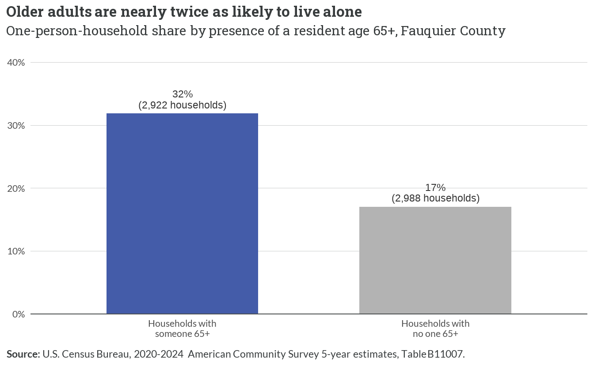
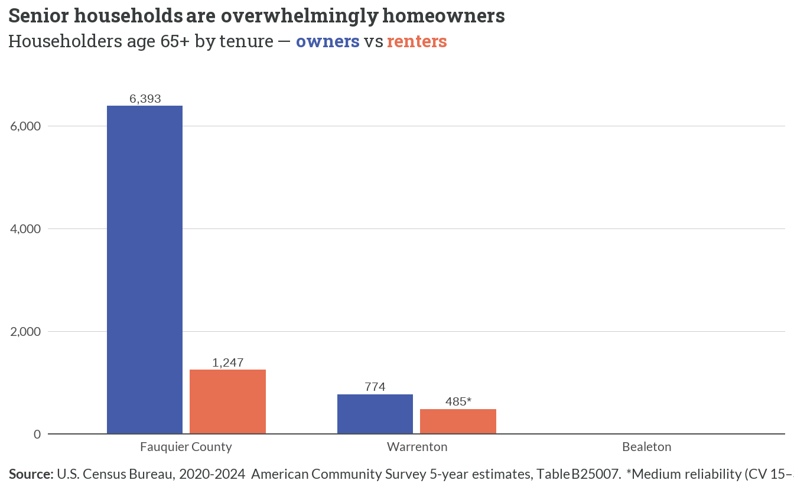
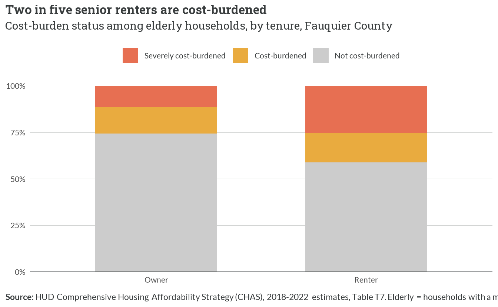
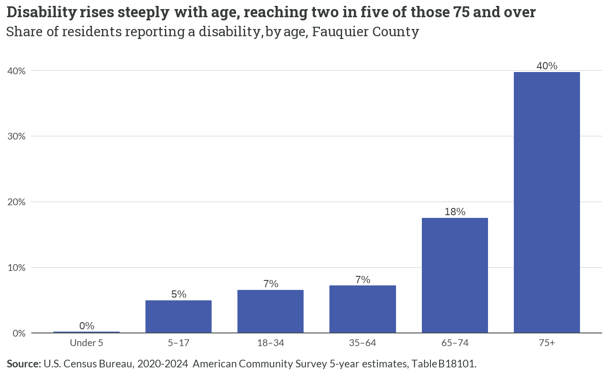
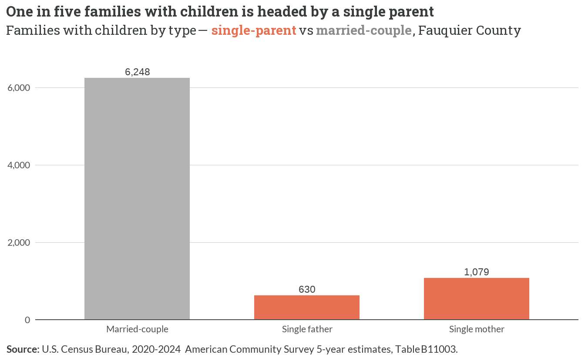
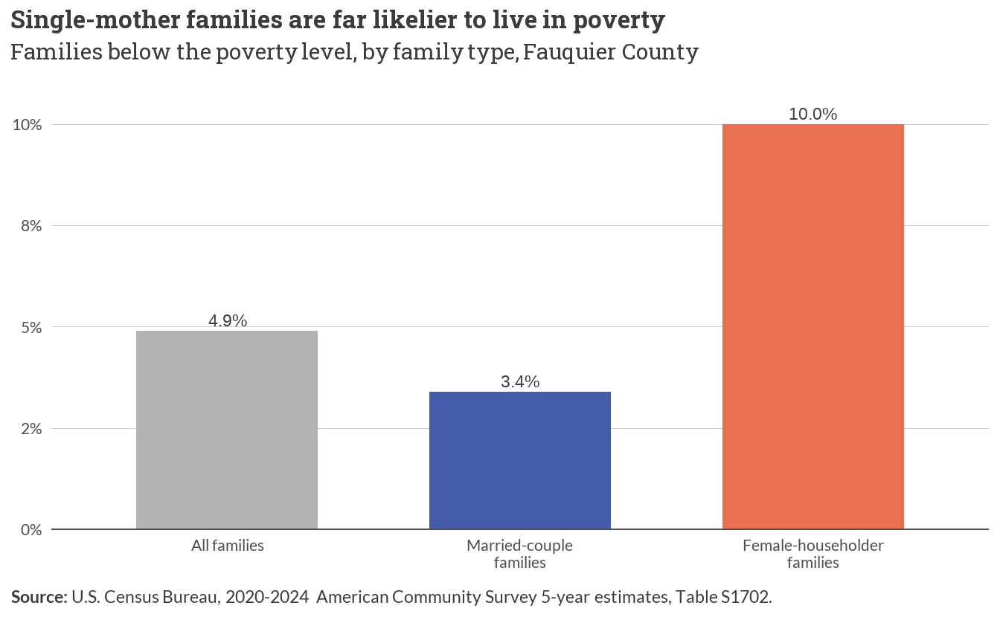
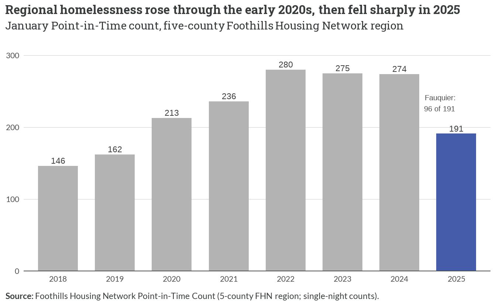
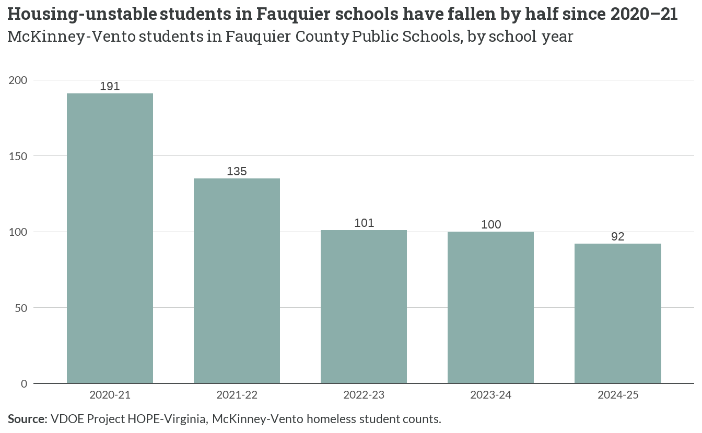
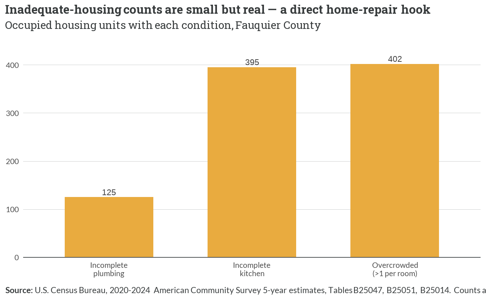
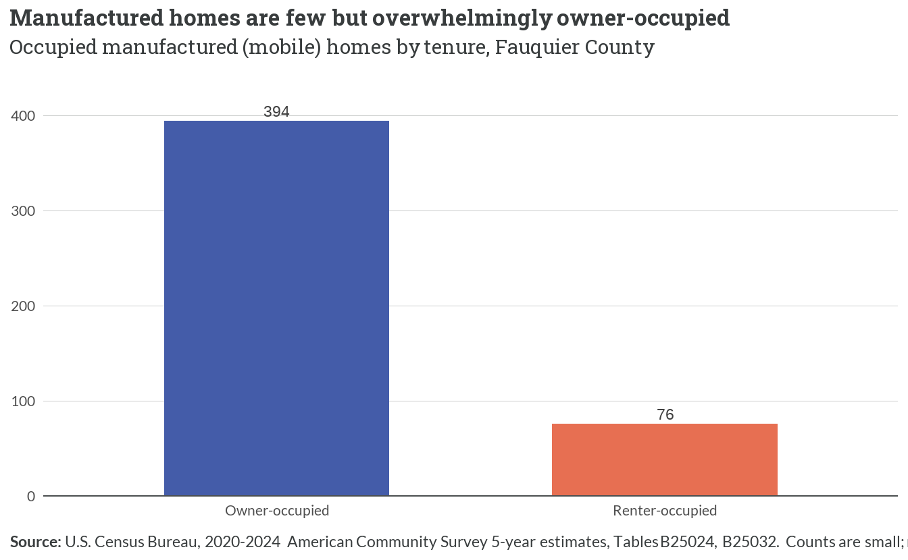

6 Vulnerable Populations
6.1 Older adults: a growing, largely aging-in-place population
- Of the county’s 9,173 households with a resident age 65 or older, about 32% — 2,922 households — are older adults living alone, versus 17% of younger households.
- Living alone in later life raises housing vulnerability: a single fixed income to cover rising costs, and a home to maintain without a second adult — the profile behind aging-in-place and downsizing pressures.
- The population most affected is set to grow: Weldon Cooper projects roughly 18,208 residents age 65+ and 9,844 age 75+ by 2050 (Chapter 7, Ch 6) — the oldest, highest-need group expanding fastest.

- About 84% of the county’s senior householders own their homes — aging in place overwhelmingly means aging in an owned single-family house, with the maintenance and accessibility burdens that implies.
- The small senior-renter population is the group with the fewest local options: little purpose-built senior rental stock (Chapter 4) and the county’s tightest affordable-rental deficit falls on the lowest incomes (Figure 5.4).
- Warrenton carries a larger senior-renter share than the county, consistent with its role as the principal rental submarket (its renter cell is Medium reliability); Bealeton’s senior counts are too small to report reliably (CV > 30%) and are suppressed.

- Senior renters carry the heavier burden: about 41% of the county’s elderly renter households are cost-burdened, versus 26% of elderly owners — the mirror of the tenure pattern seen county-wide (Figure 5.3).
- Because seniors are overwhelmingly owners (Figure 6.2), owner burden reaches more households in absolute terms, but the renter rate is higher and concentrated among those least able to move.
- The towns show the same renter-heavier pattern — senior renters in both Warrenton and Bealeton are burdened at roughly 60% — but those cells rest on very small CHAS samples, so only the county figures are charted here.
6.2 People with disabilities

- 7,134 county residents — about 10% of the population — report a disability, but prevalence is highly age-graded: minimal among children, then rising sharply after 65.
- Roughly 40% of residents age 75 and over report a disability — the same cohort projected to grow most by 2050 (Figure 6.1), pointing to rising demand for accessible and single-level housing and home modifications.
- The overlap of disability, advanced age, and homeownership (Figure 6.2) is a direct hook for home-repair and accessibility-retrofit programs — households that own but cannot easily adapt or maintain their homes.
6.3 Single-parent families and family poverty

- Of the county’s 7,957 families with own children under 18, about 21% — 1,709 families — are headed by a single parent, the large majority of them mothers (1,079 single-mother vs 630 single-father families).
- Single-parent families depend on one income in a market where even two average local wages fall short of the median home (Figure 5.6), leaving them heavily exposed to the county’s affordable-rental deficit.
- Town-level single-parent counts are small and both fall below the reliability threshold (CV > 30%), so the figure is reported county-only.

- Female-householder families face a poverty rate of 10% — nearly three times the 3% rate for married-couple families and roughly double the 5% all-family rate.
- With roughly 2,450 female-householder families county-wide, this is a sizeable group combining low income, single earnership, and (often) children — a high-priority segment for deeply affordable rental and ownership assistance.
- Family poverty and single parenthood compound the housing-cost pressures documented in Ch 4: the households with the least income are those competing hardest for the county’s scarcest affordable units.
6.4 Homelessness
WarningRead these counts carefully
The two homelessness series measure different geographies and are counts, not rates — small single-night or point-in-time tallies that swing year to year.
- The Point-in-Time (PIT) trend covers the full five-county Foothills Housing Network region (Culpeper, Fauquier, Madison, Orange, Rappahannock), not Fauquier alone. Only the 2025 count is broken out by county — Fauquier accounted for 96 of the region’s 191 people (Orange and Rappahannock reported zero).
- The VDOE McKinney-Vento series is Fauquier-specific (students in Fauquier County Public Schools who lacked stable housing at some point in the year) and uses a broader federal definition than PIT, so the two are not additive and not directly comparable.

- The regional PIT count climbed from 146 people in 2018 to a peak near 280 in 2022, held through 2024, then fell to 191 in 2025 — a single year’s drop that, on small counts, should be read cautiously rather than as an established trend.
- In 2025, Fauquier accounted for 96 of the 191 people counted region-wide (50%) — the largest single-county share, though the county-level split exists only for that one year.
- Point-in-time counts capture only people literally homeless on the count night; they understate housing instability, which the school-based McKinney-Vento data below captures more broadly.

- McKinney-Vento counts — students who lacked fixed, adequate housing at any point in the year — fell from 191 in 2020–21 to 92 in 2024–25, roughly halving over five years.
- The decline tracks the post-pandemic recovery and expanded rental assistance; on counts this small, year-to-year movement is volatile and a single school year should not be over-read.
- Even at 92, the school-based count exceeds the county’s point-in-time homeless tally — a reminder that most housing instability is doubled-up or precariously housed, not literally unsheltered.
6.5 Housing quality and manufactured housing

- A small but real slice of the stock is physically inadequate: about 125 units lack complete plumbing, 395 lack a complete kitchen, and 402 are overcrowded (more than one occupant per room).
- These are counts, not rates — each represents a fraction of a percent of the county’s 28,621 units — but they map directly onto Habitat’s home-repair and critical-repair mission.
- Town-level counts are too small to report reliably; the county figures are the dependable signal, and inadequate units concentrate in the oldest segments of the stock (Chapter 1).

- Manufactured homes are about 470 units — 1.6% of the county’s housing stock — and 84% are owner-occupied, making them one of the county’s few remaining sources of lower-cost ownership.
- As unsubsidized, naturally-occurring affordable housing, this stock is worth preserving; manufactured homes are also more exposed to age, condition, and (for those on rented lots) land-tenure risk.
NoteTown spotlight — Bealeton’s manufactured housing is undercounted by ACS
Manufactured-home and mobile-home communities are a known feature of the Bealeton–Remington area, but the ACS place-level estimate for Bealeton CDP records zero manufactured units — a small-sample artifact of the CDP boundary and survey noise, not an accurate count (the same limitation flagged for Bealeton in Chapter 1). The dependable figure is therefore the county total of 470 manufactured homes; Bealeton’s actual share is understated in the place-level data and should be treated as a known gap rather than a true absence.
6.6 What the interviews said vs. what the data shows
ImportantInterview validation
- “Aging-in-place and downsizing seniors, and returning young people, have no options.” Confirmed for the current state; the forward-looking pressure is quantified in Ch 6. The county’s older adults are overwhelmingly homeowners — about 84% of senior householders own (Figure 6.2) — and nearly a third of senior households are older adults living alone (Figure 6.1), the profile most likely to want to downsize. Yet the options they would move into are exactly what the market lacks: few small or purpose-built senior rentals (Chapter 4), the county’s deepest affordable-rental deficit at the lowest incomes (Figure 5.4), and a for-sale market with almost nothing below 100% AMI (Figure 5.5) — the same wall facing returning young adults. Meanwhile 41% of senior renters are cost-burdened (Figure 6.3) and disability climbs to roughly 40% among those 75+ (Figure 6.4), so the need is not only for more homes but for accessible, smaller, lower-cost ones. The projected surge to 18,208 residents 65+ by 2050 (Chapter 7) turns a current mismatch into a structural one.